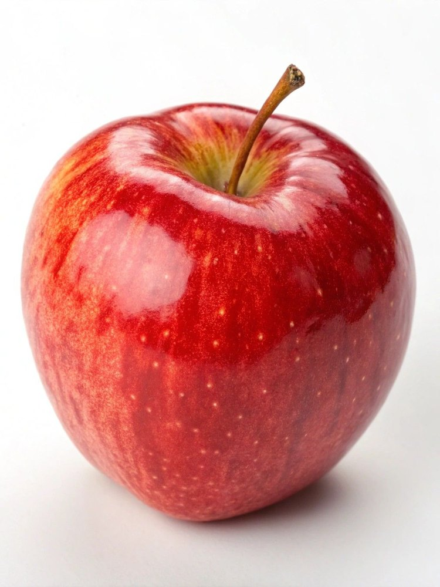
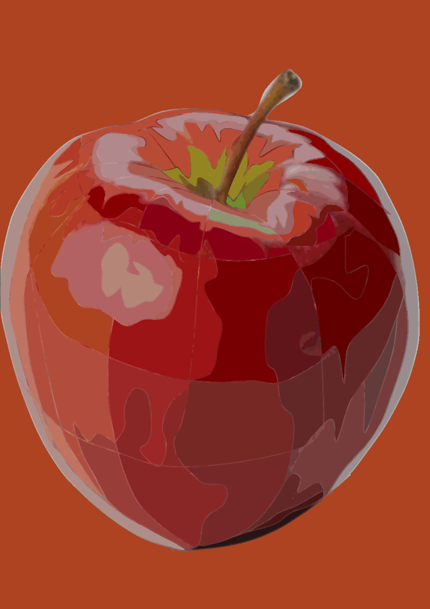
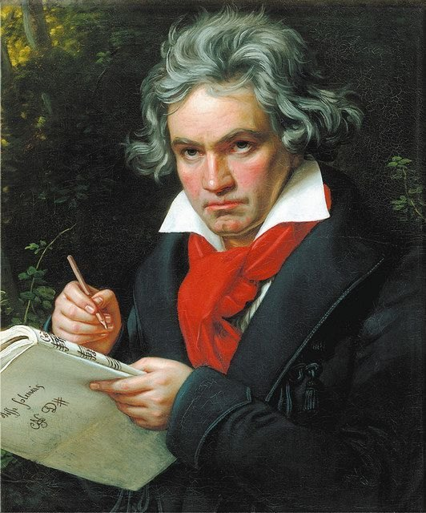
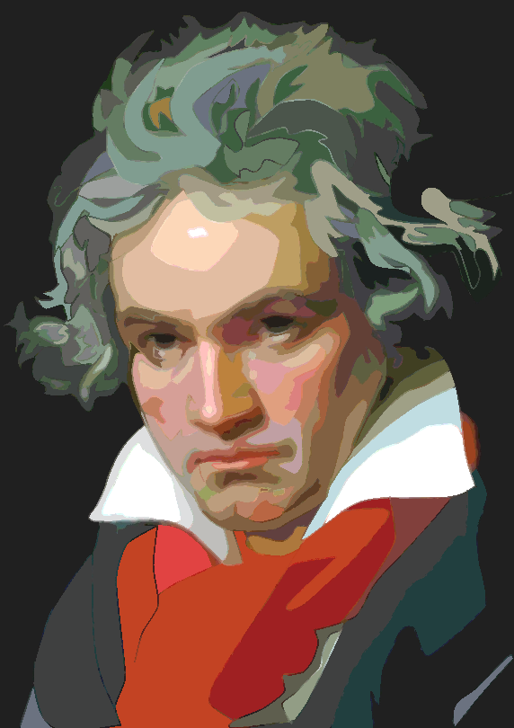

Keif Creation Apps
授業と校務を支える
Webアプリ総合案内
時間割作成アプリ、3つの美術授業用画像加工アプリ、ルビ振りアプリをまとめて紹介します。 各アプリの起動、操作説明書、授業活用資料をこのページから確認できます。
現役の高等学校教諭が校務、教科に使えるWebアプリを開発して、誰でも使っていただけるように紹介するサイトです。時間割作成アプリは公式紹介サイトへ、それ以外のアプリは各アプリ画面へのリンクと操作説明書をまとめて掲載します。 生徒・授業者が迷わず使い始められる入口として利用してください。
Timetable
時間割作成アプリ
数理最適化を用いて、学校の時間割作成を支援するWebアプリです。 教員・クラス・科目・教室・制約条件をもとに、時間割案を残りコマなしで自動生成します。
Art Education Apps
美術授業用 画像加工アプリ
写真の加工、合成、トレース・描画をWeb上で行うための3つのアプリです。 生徒の端末で使いやすいように、授業で必要な機能を中心に整理しています。
Example Works
Posterizeで加工した画像を、Drawの下絵としてトレースで作成した作品例
写真をそのまま描くのではなく、Posterizeで色面や明暗を整理してからDrawの下絵にすると、 輪郭・色面・明度のまとまりを確認しながらトレース制作に進めます。


りんごのトレース例
光沢、影、赤色の変化を大きな色面として整理し、形と明暗を意識して描く練習に使えます。


人物画のトレース例
髪、肌、服、背景の色面を整理し、曲線ペンで輪郭や面の境目を追う制作例として示せます。
Ruby Support
ルビ振りアプリ
文書内の漢字にふりがなを付けるための支援アプリです。 学習者の読みやすさに配慮した教材作成に活用できます。
Documents
説明書・授業活用資料
授業で配布したり、校内で共有したりするための資料をまとめています。 PDF形式を基本にすると、端末や環境が変わっても表示が安定します。
For Schools
学校での利用について
各アプリは試行公開中です。授業で利用する場合は、事前に端末やブラウザで動作確認を行ってください。 特に画像加工アプリは、画像サイズや端末性能によって動作が重くなる場合があります。
画像加工アプリは、美術の授業で「写真を作品制作に使いやすい資料へ変換する」「構成案を作る」 「下絵をもとにトレースして描く」ことを目的にしています。 作品制作の補助として使い、最終的な表現や判断は生徒自身が行うことを大切にします。